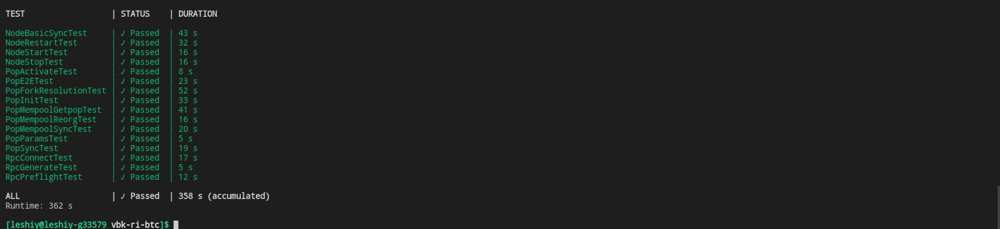
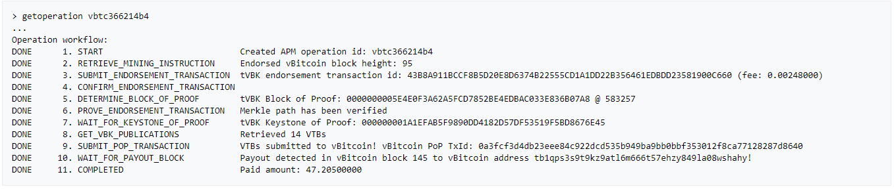
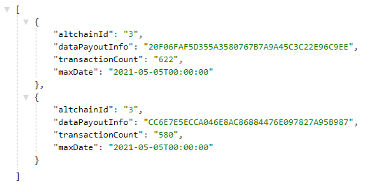
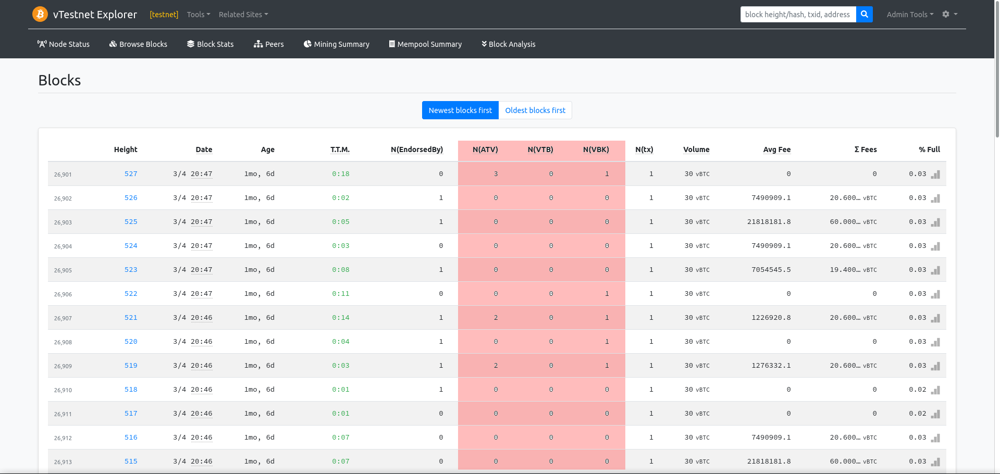

|
veriblock-pop-cpp
C++11 Libraries for leveraging VeriBlock Proof-Of-Proof blockchain technology.
|
To show that the pop-enabled altchain most likely works, once could screenshots (with supporting links) of:




Here we describe which POP related tests should be added and should pass to be confident that POP security works fine. All tests can be separated to the following categories:
unit testsBTC functional testsPOP functional testsView APM get-operation First thing is to make sure that all original BTC tests pass and work well. On the Unix sytem you can do it with the following command:
Before starting the POP integration it is recommended to fix tests if some of them do not work properly. Here is the full list of the POP unit tests:
e2e_poptx_tests.cpppop_reward_tests.cppvbk_merkle_tests.cppblock_validation_tests.cpprpc_service_tests.cppgenesis_block_tests.cppforkresolution_tests.cpp You can see the corresponding changes in the Makefile: https://github.com/VeriBlock/vbk-ri-btc/blob/026fba4e80bc114c68c636e3c9cfc6af855c9c94/src/Makefile.test.include#L117 These tests are available in the vbk/tests/unit directory.
Original Bitcoin code has functional tests that reside in the test/functional directory. bitcoind should be built prior to running functional tests. VBITCOIND_PATH environment variable should be set to the path to the bitcoind daemon:
Tests are started with the following command:
These tests validate that all POP functionality works fine. All important parts of the POP security are covered by these tests. Therefore it is important to make sure that all tests pass before starting Mainnet or even Testnet. VeriBlock Python framework should be installed to make these tests run. Follow the VeriBlock Python testing guide here. Now the following POP test runner can be copied to the source code: https://github.com/VeriBlock/vbk-ri-btc/blob/master/test/integration/test_runner.py A node which acts as an adaptor for bitcoind has been implemented. This adaptor able to run, stop, restart bitcoind and execute RPC functions: https://github.com/VeriBlock/alt-integration-cpp/blob/master/pypoptools/pypoptesting/altchain_node_adaptors/vbitcoind_node.py For debugging purposes it is possible to run a single test from the test set:
The result of successfully passing tests should look like this:
Run getoperation and view an e2e pop transaction.
The latest ABFI build can be downloaded through docker
The altchain BFI can be configured through the application.conf file which is inside the bin folder.
Configuration example:
Alternatively you can use the next environment variables to configure the ABFI:
| Configuration name | Environment variable | Default | Description |
|---|---|---|---|
| altchainId | ALTCHAIN_ID | undefined | The altchain id, it must be configured |
| blockChainNetwork | NETWORK | testnet | The altchain network, there are three options: mainnet, testnet and regtest |
| blockChainRegtestHost | REGTEST_HOST | undefined | The altchain regtest host (the network should be specified as regtest) |
| nodeCoreRpcHost | NODECORE_HOST | 127.0.0.1:10500 | The NodeCore ip where the ABFI will connects to |
| notificationsTest | HTTP_API_NOTIFICATIONS_TEST | false | Enables the /notifications-test endpoint to trigger test notifications |
| forkThreatThreshold | FORK_THREAT_THRESHOLD | 2 | |
| forkThreatRatioThreshold | FORK_THREAT_RATIO_THRESHOLD | 0.8 | |
| debugOutput | DEBUG_OUTPUT | false | Generate debug log files |
You can add chains to the securityInheriting block, for example:
| Configuration name | Description |
|---|---|
| payoutAddress | This configuration should be set in order to make the ABFI work but it will be removed, set it to "0x" |
| pluginKey | The plugin to load |
| id | The chain id |
| name | The chain name |
| host | API url from the coin daemon |
| auth: username | The username used on the daemon authentication (if any), it can be disabled by commenting the whole auth config block. |
| auth: password | The password used on the daemon authentication (if any), it can be disabled by commenting the whole auth config block. |
The next endpoints are accessible at the ABFI API (http://localhost:8080 by default):
| Endpoint | Description |
|---|---|
| /api/chains | Get the last 20 best blocks from the blockchain and any fork blocks at the same height |
| /api/chains/best | Get the best chain information |
| /api/chains/blocks/{hash} | Get the SI block for the given hash |
| /api/chains/blocks/best/{height} | Get the SI best block for the given height |
| /api/chains/blocks/last-finalized | Get the last finalized block |
| /api/chains/blocks/last-finalized-btc | Get the last block finalized by btc |
In order to get responses there should be at least one APM mining at the altchain network also it could take a while (hours), here is a response example for that endpoint: